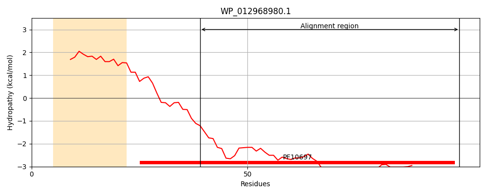
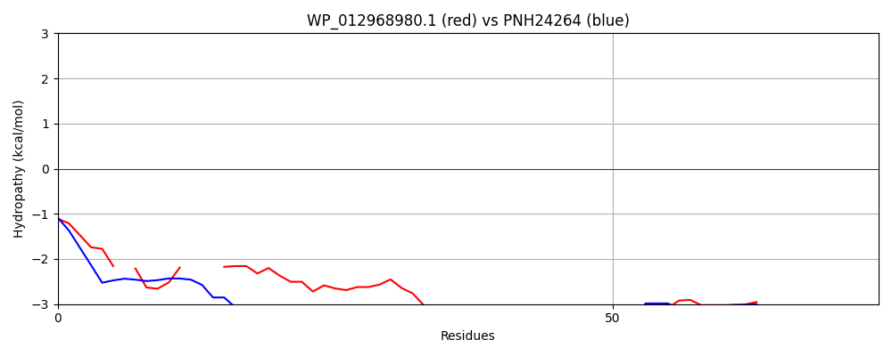

WP_012968980.1
Hit Accession: PNH24264
Hit TCID: 9.B.415.2.1
Hit Description: gnl|BL_ORD_ID|11895 gnl|TC-DB|PNH24264.1|9.B.415.2.1 hypothetical protein CVS44_00905 [Staphylococcus haemolyticus]
Mach Len: 74
e:0.000111
Query TMS Count : 1
Hit TMS Count: 3
TMS-Overlap Score: 0.850000
Predicted Substrates:None
BLAST Alignment:
| Protein Hydropathy Plots: | |
|---|---|
|  |  |
Pairwise Alignment-Hydropathy Plot: | |
|  | |